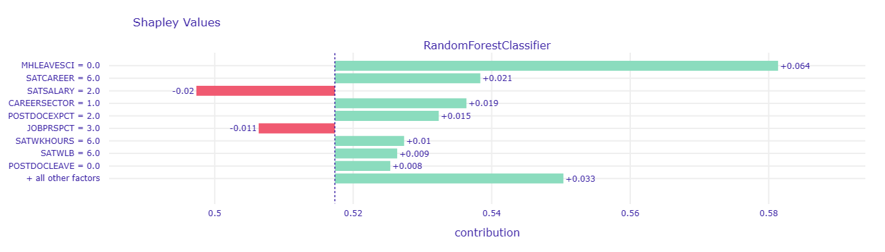
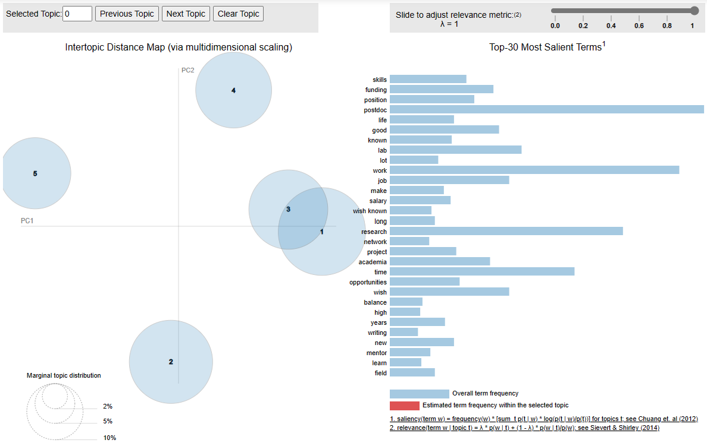

In this post, I will be exploring factors that influence postdoctoral researchers perspective to career in scientific research with predictive modeling and natural language processing (NLP).
(16 min read)
Hi Everyone. I have got some time during the winter break to write another post. I came across Natures postdoc 2023 survey, which is a series of articles published by Nature to examine the situation of postdoctoral researchers such as their post-pandemic well being, their use of artificial intelligence chatbot such as ChatGPT, and their career outlook. The general impression I got is that postdoc researchers are pressured to secure fundings and stable jobs, despite their high educational level. Some of them event went on strike.
Aside from postdoc, I also came across some articles discussing the prospect of early career researchers who earned their Ph.D and got into a faculty position, 'Academics without publications are just like imperial concubines without sons': the 'new times' of Chinese higher education. The paper highlights how the publish or perish culture drives researchers to produce as much research works as possible to earn job security as a tenure professor; This status quo reflects the state of perpetual competition (dubbed as academic hunger games) that threatens mental health and work-life balance or early career researchers.
As discussed in van Dalen (2020)s paper titled How the publish-or-perish principle divides a science: the case of economists, while the publish or perish culture promotes academics rank and position, its serious drawbacks include the excessive number of papers that are hardly read, makes researchers turn their back on national issues as they focus on publishing, and increases the probability of unethical behavior like fraud or data manipulation.
It is interesting how Nature made available their dataset from their 2023 postdoc survey. Taking what I learned from Natures postdoc 2023 survey and articles around the publish or perish culture, I think it could be interesting to explore factors that influence postdoctoral researchers perspective to career in scientific research with predictive modeling and natural language processing. The data set as 89 variables, including both numerical and textual data. I divided the dataset into a numerical dataset for predictive machine learning model, and a textual dataset for the follow-up natural language processing analysis. The data was cleaned in R, but I will be using Python in this post.
import pandas as pd
import numpy as np
import sweetviz
import seaborn as sns
import matplotlib.pyplot as plt
#Read the data set
df = pd.read_csv("postdoc_processed.csv", encoding = "ISO-8859-1") #For prediction task
df_text = df[['HOWEMPLOYED', 'EMPLOYSTATUS', 'WHYMOVE', 'WHYEXPCT',
'WHYINCREASE', 'WHYDECREASE', 'WHYSECONDJOB', 'DISCRIMCAT',
'DISCRIMPER', 'DISCRIMOBSCAT', 'CHALLENGE', 'LACKEDSKILLS',
'REFLECT', 'CONTINENT', 'COUNTRY', 'AGE',
'GENDER', 'RACE']]
df_reflect = df_text.dropna(subset=['REFLECT']) #For NLP#Read the data set
df = pd.read_csv("postdoc_prediction_cleaned.csv", encoding = "ISO-8859-1")
# Use the analyze function to perform EDA
analyze_df = sweetviz.analyze(df, target_feat = "REGRET")
# Render and show the results of EDA
analyze_df.show_html("analyze.html")sweetviz package in Python to generate a report on exploratory data analysis as seen above. The targeted variable is named REGRET, which is respondents answer to a question of Would you recommend to your younger self that you pursue a career in scientific research?. The answer are either 1 (Yes) or 0 (No). As seen from the data exploration report, both yes and no have similar proportion.RFECV with a default Random forest classification model, with minimum feature number == 20, and using roc_auc as the performance metric.from sklearn.ensemble import RandomForestClassifier
from sklearn.feature_selection import RFECV
from sklearn.model_selection import train_test_split, RandomizedSearchCV, StratifiedKFold
from sklearn.metrics import accuracy_score
from sklearn.model_selection import cross_val_scoreX = df.drop('REGRET', axis=1)
y = df['REGRET']
# Perform train-test split
X_train, X_test, y_train, y_test = train_test_split(X, y, test_size=0.2, random_state=42)
# Initialize the RandomForestClassifier
rf_classifier = RandomForestClassifier(random_state=123)
# Initialize the RFECV
rfecv_model = RFECV(estimator=rf_classifier,
step=1, cv=5,
scoring='roc_auc',
min_features_to_select=20)
rfecv = rfecv_model.fit(X_train, y_train)
print('Optimal number of features :', rfecv.n_features_)
print('Best features by RFECV with random forest:', X_train.columns[rfecv.support_])X_train_reduced = X_train[['POSTDOCNATIVE', 'POSTDOCMOVE', 'FIRSTPOSTDOC', 'PREVPOSTDOC',
'POSTDOCEXPCT', 'CAREERSECTOR', 'SALARY', 'SALARYCHANGE', 'PAIDVACAY',
'PAIDSICK', 'INSURANCE', 'PENSION', 'PARENTLEAVE', 'CHILDCARE',
'BECOMEPARENT', 'DEBT', 'SAVING', 'SAVINGPROBLEM', 'WKHOURS',
'OVERTIME', 'OVERNIGHT', 'WEEKENDWK', 'POSTDOCVACANCY', 'SATCHANGE',
'SATSALARY', 'SATWELLNESS', 'SATFUNDING', 'SATTIME', 'SATCAREER',
'SATTRAINING', 'SATJOBSCURITY', 'SATOPT', 'SATSUPERVISE', 'SATORG',
'SATDECISION', 'SATWLB', 'SATWKHOURS', 'SATINTEREST', 'SATACCOM',
'SATRELATION', 'SATINDE', 'SATRECOG', 'SATSAFETY', 'SATDIVERSE',
'SUPERVISETIME', 'DISCRIMEXP', 'DISCRIMOBS', 'NEEDMHHELP',
'AGREEMHSUPP', 'AGREEDIRECTSUPP', 'AGREEWKSUPP', 'AGREEWLB',
'AGREELNGWK', 'MHLEAVESCI', 'BLIVGENDEREQ', 'BLIVETHEQ', 'BLIVSAFETY',
'BLIVDIGNITY', 'JOBPRSPCT', 'PRSPCTCHNGE', 'POSTDOCLEAVE', 'MINORITY',
'LTHEALTHPROB']]
X_test_reduced = X_test[['POSTDOCNATIVE', 'POSTDOCMOVE', 'FIRSTPOSTDOC', 'PREVPOSTDOC',
'POSTDOCEXPCT', 'CAREERSECTOR', 'SALARY', 'SALARYCHANGE', 'PAIDVACAY',
'PAIDSICK', 'INSURANCE', 'PENSION', 'PARENTLEAVE', 'CHILDCARE',
'BECOMEPARENT', 'DEBT', 'SAVING', 'SAVINGPROBLEM', 'WKHOURS',
'OVERTIME', 'OVERNIGHT', 'WEEKENDWK', 'POSTDOCVACANCY', 'SATCHANGE',
'SATSALARY', 'SATWELLNESS', 'SATFUNDING', 'SATTIME', 'SATCAREER',
'SATTRAINING', 'SATJOBSCURITY', 'SATOPT', 'SATSUPERVISE', 'SATORG',
'SATDECISION', 'SATWLB', 'SATWKHOURS', 'SATINTEREST', 'SATACCOM',
'SATRELATION', 'SATINDE', 'SATRECOG', 'SATSAFETY', 'SATDIVERSE',
'SUPERVISETIME', 'DISCRIMEXP', 'DISCRIMOBS', 'NEEDMHHELP',
'AGREEMHSUPP', 'AGREEDIRECTSUPP', 'AGREEWKSUPP', 'AGREEWLB',
'AGREELNGWK', 'MHLEAVESCI', 'BLIVGENDEREQ', 'BLIVETHEQ', 'BLIVSAFETY',
'BLIVDIGNITY', 'JOBPRSPCT', 'PRSPCTCHNGE', 'POSTDOCLEAVE', 'MINORITY',
'LTHEALTHPROB']]RandomizedSearchCV to randomly search the search space of hyperparameter value for the combinnation of hyperparameter that yields the best result. I am tuning n_estimators, max_depth, min_samples_leaf, and min_samples_split with five folds cross-validation, using accuracy as the performance metric.# Define the hyperparameter grid to search
param_grid = {
'n_estimators': [50, 100, 200],
'max_depth': [None, 10, 20, 30],
'min_samples_split': [2, 5, 10],
'min_samples_leaf': [1, 2, 4]
}
# Initialize RandomizedSearchCV with the classifier, hyperparameter grid, and cross-validation
random_search = RandomizedSearchCV(
rf_classifier,
param_distributions=param_grid,
n_iter=10, # Adjust the number of iterations as needed
scoring='accuracy',
cv=5,
random_state=42
)
# Fit the randomized search on the selected features
random_search.fit(X_train_reduced, y_train)
# Get the best hyperparameters
best_params = random_search.best_params_
print("Best Hyperparameters:", best_params)# Initialize the RandomForestClassifier
rf_classifier_tuned = RandomForestClassifier(n_estimators = 100, min_samples_split = 5, min_samples_leaf = 2, max_depth = 20, random_state=123)
rf_classifier_tuned.fit(X_train_reduced, y_train)
rfc_tuned_predict = rf_classifier_tuned.predict(X_test_reduced)
rfc_tuned_cv_score = cross_val_score(rf_classifier_tuned, X_test_reduced, y_test, cv=5, scoring='roc_auc')from sklearn.metrics import confusion_matrix
from sklearn.metrics import classification_report
from sklearn.metrics import mean_squared_error
from math import sqrt
from sklearn import metrics
#%% Evaluate the tuned RF
print("=== Confusion Matrix ===")
print(confusion_matrix(y_test, rfc_tuned_predict))
print('\n')
print("=== Classification Report ===")
print(classification_report(y_test, rfc_tuned_predict))
print('\n')
print("=== All AUC Scores ===")
print(rfc_tuned_cv_score)
print('\n')
print("=== Mean AUC Score ===")
print("Mean AUC Score - Random Forest: ", rfc_tuned_cv_score.mean())
#Accuracy of the tuned RF: test data
print("accuracy score of the test set for tuned RF", rf_classifier_tuned.score(X_test_reduced, y_test))
#Root mean square error
mse_rfc_tuned = mean_squared_error(y_test, rfc_tuned_predict)
rmse_rfc_tuned = sqrt(mse_rfc_tuned)
print('RMSE of tuned RF = ', rmse_rfc_tuned)#define metrics for tuned RFC
y_pred_proba_tuned_rf = rf_classifier_tuned.predict_proba(X_test_reduced)[::,1]
fpr_tuned_rf, tpr_tuned_rf, _ = metrics.roc_curve(y_test, y_pred_proba_tuned_rf)
auc_tuned_rf = metrics.roc_auc_score(y_test, y_pred_proba_tuned_rf)
#create ROC curve
plt.plot(fpr_tuned_rf, tpr_tuned_rf, label="Tuned AUC for RF="+str(auc_tuned_rf.round(3)))
plt.legend(loc="lower right")
plt.ylabel('True Positive Rate')
plt.xlabel('False Positive Rate')
# displaying the title
plt.title("ROC of Tuned RF")
plt.show()#%% Feature importance report of the tuned RF
# Create a pd.Series of features importances
importances_rf = pd.Series(rf_classifier_tuned.feature_importances_, index = X_test_reduced.columns)
# Sort importances_rf
sorted_importance_rf = importances_rf.sort_values()
#Horizontal bar plot
plt.figure(figsize=(8, 20))
sorted_importance_rf.plot(kind='barh', color='lightgreen');
plt.xlabel('Feature Importance Score')
plt.ylabel('Features')
plt.title("Visualizing Important Features")
plt.show()From the plot above, the four most influential predictors are as follows:
MHLEAVESCI: Have you considered leaving science because of depression, anxiety, or other mental health concerns related to your work? (0 = No 1 = Yes).
JOBPRSPCT: How do you feel about your future job prospects? (1 = Extremely negative 2 = Somewhat negative 3 = Neither positive nor negative
4 = Somewhat positive 5 = Extremely positive)
SATCAREER: Thinking about your current postdoc, how satisfied are you with the following? -Career advancement opportunities. (1 = extremely dissatisfied 4 = neither satisfied nor dissatisfied 7 = extremely satisfied).
SATCHANGE: In the past year would you say your level of satisfaction has (1 = Significantly worsened 2 = Worsened a little 3 = Stayed the same 4 = Improved a little 5 = Significantly improved).
Lets try explaining it further with DALEX: moDel Agnostic Language for Exploration and eXplanation (Baniecki et al., 2021). We will use partial dependence plot (PDP), breakdown plot, and SHapley Additive exPlanations (SHAP) plot to explain the prediction.
import dalex as dx
#we created an explainer with dalex package
exp = dx.Explainer(rf_classifier_tuned, X_test_reduced, y_test)
# PDP profile for surface and construction.year variable
RF_mprofile = exp.model_profile(variables = ["MHLEAVESCI", "JOBPRSPCT", "SATCAREER", "SATCHANGE"] , type = "partial")
# comparison for random forest and linear regression model
RF_mprofile.plot()The PDP plot above shows that MHLEAVESCI has negative influence to the prediction, meaning that individuals who respond 1 (considered leaving science because of mental health concerns) are more likely to have the negative outcome (not recommend their younger self to pursue a career in scientific research).
The other three predictors show positive influence to the prediction, meaning that the more positive the individual feels about their job prospect, their career advancement opportunities, and their overall level of satisfaction in the past year, the more likely for them to have the positive outcome (recommend their younger self to pursue a career in scientific research).
We can further explore the prediction in instances of positive and negative cases. Positive case means post doctoral researchers who answered 1 in their targeted variable (recommend their younger self to pursue a career in scientific research) while the negative case answered the targeted variable otherwise. We will use breakdown plot and SHAP plot to explore the prediction of each individual case.
# Break Down for apartment observation
rf_pparts = exp.predict_parts(new_observation = X_test_reduced.iloc[202], type = "break_down")
# plot Break Down
rf_pparts.plot()# Break Down for apartment observation
rf_pparts_shap = exp.predict_parts(new_observation = X_test_reduced.iloc[202], type = "shap")
# plot Break Down
rf_pparts_shap.plot()# Break Down for apartment observation
rf_pparts = exp.predict_parts(new_observation = X_test_reduced.iloc[6], type = "break_down")
# plot Break Down
rf_pparts.plot()# Break Down for apartment observation
rf_pparts_shap = exp.predict_parts(new_observation = X_test_reduced.iloc[6], type = "shap")
# plot Break Down
rf_pparts_shap.plot()
df_text['REFLECT']from wordcloud import WordCloud, STOPWORDS
# Custom stopwords
custom_stopwords = ["post doc", "doc", "nan", "don", "phd", "postdoc"]
# Concatenate all text data in the 'REFLECT' column
text_data = ' '.join(df_reflect['REFLECT'])
# Remove English stopwords and custom stopwords
stopwords = set(STOPWORDS)
stopwords.update(custom_stopwords)
# Create a WordCloud object with specified stopwords
wordcloud = WordCloud(width=800, height=400, background_color='white', stopwords=stopwords).generate(text_data)
# Display the word cloud using matplotlib
plt.figure(figsize=(10, 5))
plt.imshow(wordcloud, interpolation='bilinear')
plt.axis('off') # Turn off axis numbers and ticks
plt.show()def plot_10_most_common_words(count_data, tfidf_vectorizer):
import matplotlib.pyplot as plt
words = tfidf_vectorizer.get_feature_names()
total_counts = np.zeros(len(words))
for t in count_data:
total_counts += t.toarray()[0]
count_dict = (zip(words, total_counts))
count_dict = sorted(count_dict, key=lambda x: x[1], reverse=True)[0:10]
words = [w[0] for w in count_dict]
counts = [w[1] for w in count_dict]
x_pos = np.arange(len(words))
plt.bar(x_pos, counts, align='center')
plt.xticks(x_pos, words, rotation=90)
plt.xlabel('Words')
plt.ylabel('Counts')
plt.title('10 Most Common Words')
plt.show()
# Custom stopwords, including your own stopwords
custom_stopwords = set(["post doc", "doc", "nan", "don", "phd", "postdoc"])
# Combine standard English stopwords with custom stopwords
stopwords = set(text.ENGLISH_STOP_WORDS).union(custom_stopwords)
# Handle NaN values by filling them with an empty string
df_text['REFLECT'] = df_text['REFLECT'].fillna('')
# Initialize the count vectorizer with the English stop words
tfidf_vectorizer = TfidfVectorizer(stop_words=stopwords)
# Fit and transform the processed titles
count_data = tfidf_vectorizer.fit_transform(df_text['REFLECT'])
# Visualize the 10 most common words
plot_10_most_common_words(count_data, tfidf_vectorizer)from sklearn.feature_extraction import text
import pyLDAvis
import pyLDAvis.sklearn
pyLDAvis.enable_notebook()
from sklearn.feature_extraction.text import CountVectorizer, TfidfVectorizer
from sklearn.decomposition import LatentDirichletAllocation
custom_stopwords = ["post doc", "doc", "nan", "don", "phd", "postdoc"]# Custom stopwords, including your own stopwords
custom_stopwords = set(["post doc", "doc", "nan", "don", "phd"])
# Combine standard English stopwords with custom stopwords
stopwords = set(text.ENGLISH_STOP_WORDS).union(custom_stopwords)
tf_vectorizer = CountVectorizer(strip_accents='unicode',
stop_words=stopwords,
lowercase=True,
token_pattern=r'\b[a-zA-Z]{3,}\b',
ngram_range=(1, 2),
max_df=0.5,
min_df=10)
dtm_tf = tf_vectorizer.fit_transform(df_text['REFLECT'].values.astype('U'))
tfidf_vectorizer = TfidfVectorizer(**tf_vectorizer.get_params())
dtm_tfidf = tfidf_vectorizer.fit_transform(df_text['REFLECT'].values.astype('U'))
# for TF DTM
lda_tf = LatentDirichletAllocation(n_components=5, random_state=0)
lda_tf.fit(dtm_tf)
# for TFIDF DTM
lda_tfidf = LatentDirichletAllocation(n_components=5, random_state=0)
lda_tfidf.fit(dtm_tfidf)
pyLDAvis.sklearn.prepare(lda_tf, dtm_tf, tf_vectorizer)for i,topic in enumerate(lda_tf.components_):
print(f'Top 10 words for topic #{i}:')
print([tf_vectorizer.get_feature_names_out()[i] for i in topic.argsort()[-10:]])
print('\n')Most topics are about work in academia and research, with topic 0 and 2 that are different. Topic 0 seems to be about concerns for resources such as time and funding. Topic 2 seems to be about financial matter such as cost of living and salary. Some excerpts from respondents reflection are:
Mostly, I would advise my past self to choose a different PI and lab for my postdoc. Beyond that, I wish had known about the cost of doing a postdoc in terms of lost income potential relative to other careers, and the reality of how few academic jobs there are in my field.
High degree of competitiveness, low salaries, strenuous hours, publish or perish, excessive stress, no psychological support, salary relationship with respect to the degree of studies/specialization with respect to other jobs
Wish I was aware of lack of support system for Postdocs. Beyond publishing our work, there is no other way of measuring ones caliber in science. It also depends of how well known the PI is. I also wish I had a better insight into how low the salary and other benefits are. Above all I wish I had known the difficulty and lack of available positions in academia to be pursued.
I wish that they were teaching us more that working in academia means never having job security. I wish that I knew that there is not enough jobs and that only way to land a permanent job in academia is to become a professor.
Science is not valued as it should be. Job prospects and opportunities have gotten worse. And most importantly the salary as post doc doesnt help you make the ends meet at all. Post doc and academia only work for those who have lots of savings and strong financial ability to be underpaid for years of post doc until they build up their resume and publish sufficient amount of papers without having to think about financial problems.
There is a wealth of research possible in industry, that pays better, is organized better, and allows you to do MORE research, less beauracracy and teaching, working with real professionals, is goal oriented, not article oriented, and allows you to maintain a work life balance, have time for a partner, family, a house, and retirement.

Wordings of the topics seem to be similar to the negative case results as well. However, topic 4 is different from results from negative cases as it discusses about balancing the task and responsibility (e.g., work, project, writing). This is not shown from the negative case dataset. Some excerpts from respondents reflection are:
Personal enthusiasm and expectations for academic research will decline rapidly at a certain time, and good habits need to be developed to resist the frustration brought about by the decline in enthusiasm and physical strength; to exercise writing skills; to balance family and research, and to Research can always help yourself, but family doesnt necessarily
Although I would still pursue a career in science, I would definitely not waste the years I have spent in my postdoc and rather head straight for industry job after my PhD. I am already miles behind in terms of salary and growth compared to my peers who went straight to industry after their degrees.
Having a better saving culture, work/family time balance, and having participated more in financing processes or acquiring scholarships, etc.
Everyone is going to be working just as hard as you, the best you can do is to do good science, follow your interests, and pursue every potential opportunity for funding and development.
Publishing in high impact journals is not as awarding as having a great life-work balance. Reach out and accept help and initiate collaborations.
You will have way less time for bench research because you will be writing fellowships/grants, spending time for committee service, and mentoring compared to when in grad school.
In concluding, the data analysis methods discussed in this post, while not novel (as Ive previously posted about them), reveal an intriguing aspecthow their combination can offer insights into a subject. The findings consistently align with existing literature, emphasizing the pivotal role of mental health in individual resilience in academia.
Navigating a postdoctoral research role naturally prompts considerations of job prospects, salary, and work-life balance, all crucial factors influencing ones professional satisfaction. In academia, where competition is constant, elements such as maintaining work-life balance, coping with the pressure to publish, and confronting job insecurity can significantly impact mental well-being.
This analysis underscores the importance of prioritizing personal well-being over professional pursuits when faced with such choices. Although academia boasts merits, uncertainties regarding financial stability, job security, and work-life balance still exist. Choosing a career in academia demands thoughtful consideration of these complexities. Anyway, thank you so much for reading!
Text and figures are licensed under Creative Commons Attribution CC BY 4.0. The figures that have been reused from other sources don't fall under this license and can be recognized by a note in their caption: "Figure from ...".
For attribution, please cite this work as
Wongvorachan (2023, Dec. 15). Tarid Wongvorachan: Exploring Nature's 2023 postdoc survey with predictive modeling and NLP. Retrieved from https://taridwong.github.io/posts/2023-12-10-naturepostdoc/
BibTeX citation
@misc{wongvorachan2023exploring,
author = {Wongvorachan, Tarid},
title = {Tarid Wongvorachan: Exploring Nature's 2023 postdoc survey with predictive modeling and NLP},
url = {https://taridwong.github.io/posts/2023-12-10-naturepostdoc/},
year = {2023}
}